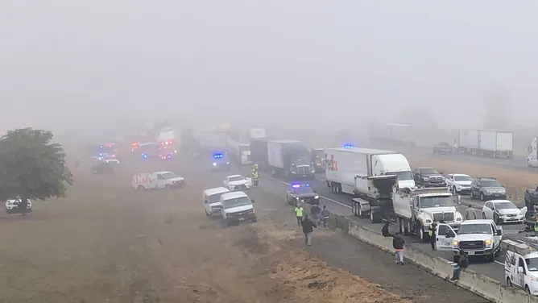

Last Updated: March 2026
Driving in adverse environmental conditions remains the leading cause of multi-vehicle pile-ups globally. According to 2024-2025 road safety data, visibility impairment due to fog, rain, and dust contributes to over 1.2 million accidents annually. The primary issue is not just the lack of light, but the failure of passive sensors (cameras) to distinguish between airborne particles and solid objects.

In dense fog, the human eye and standard automotive cameras experience "Backscatter." This occurs when light hits fog droplets and reflects directly back into the lens, creating a "white wall" effect. Statistics show that 15% of all fatal crashes occur during weather-related low visibility.
During heavy rain, water film on camera lenses distorts images, leading to "False Positives" or complete system failure. Technotronics 905nm pulsed laser ignores these water films, measuring the time-of-flight to the physical object ahead.
Night driving accounts for only 25% of total travel but results in 50% of all traffic fatalities. Driver fatigue often sets in after 10:00 PM, slowing reaction times by up to 30%. When visibility is further reduced by darkness, the risk of a high-speed collision increases exponentially.
Our research into 2026 accident trends highlights that early-warning systems can reduce night-time rear-end collisions by up to 45% by providing an extra 2.5 seconds of reaction time—the difference between a safe stop and a fatal impact.
The Technotronics DriveSense system was engineered specifically to solve these "News & Safety" problems. By moving beyond human vision and camera-based processing, we provide a reliable, high-precision distance map that functions in the environments where you need it most.